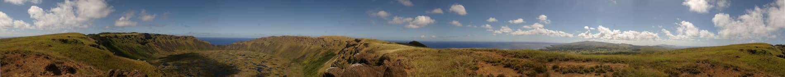
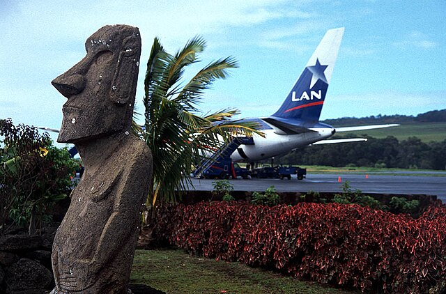

Зміст
Назва острова
Найчастіше використовують назви «острів Великодня» та «Рапа-Нуї». Назва Рапа-Нуї (у перекладі «Великий Рапа») насправді не рапануйського, а полінезійського походження. Таку назву острів отримав від таїтянських мореплавців, що використовували уточнення нуї (великий), щоб розрізняти острів Великодня та острів Рапа, що розташований за 650 км на південь від Таїті. Сама назва «Рапа-Нуї» викликала безліч суперечок серед лінгвістів з приводу правильного написання цього слова. Серед англомовних фахівців слово «Rapa Nui» (2 слова) використовується для найменування острова, слово «Rapanui» (1 слово) — коли йдеться про народ або місцеву культуру. В українській мові усталеним є написання через дефіс для назви острова і разом для похідних слів.
Географія
Острів Великодня — унікальна територія в південно-східній частині Тихого океану, що є одним з найвіддаленіших від суші населених островів у світі. Розташований за 3703 км від узбережжя найближчого материка на сході (Південної Америки) і віддалений від найближчих населених островів на заході (острів Піткерн) на 1819 км[4]. Координати острова: 27°07′ пд. ш. 109°21′ зх. д. Площа острова — 163,6 км²[5], протяжність із заходу на схід 24 км, з півночі на південь — 12 км. Найближча ненаселена земля — архіпелаг Сала-і-Ґомес, не враховуючи декількох скель неподалік від острова. Острів має форму прямокутного трикутника, гіпотенуза якого — південно-східний берег. Сторони цього «трикутника» мають довжину в 16, 18 і 24 км. По кутах острова підносяться згаслі вулкани: Рано-Као (рап. Rano Kao) (324 м) поряд з поселенням Матавері; Пуа-Катіки (рап. Puakatike) (377 м) і Теревака (рап. Terevaka) (539 м — найвища точка острова)[6]. Родючий ґрунт розташований на півночі острова, де місцеві жителі вирощують батат, або солодку картоплю, і ямс. Найвищий кратер вулкана Теревака має назву Рано-Арої (рап. Rano Aroi) (близько 200 м над рівнем моря). Власне «Рано-Арої» — це назва озера, що заповнює згаслий кратер. Інший кратер Теревака — Рано-Рараку (рап. Rano Raraku) (160 м) також містить озеро з великим запасом прісної води, оточене чагарниками очерету. Діаметр цього кратера — близько 650 метрів. Діаметр кратера Рано-Као — близько 1500 метрів, глибина — 800 метрів. Вулкан має симетричну форму та оточений горбистою місцевістю. Південний схил обривається в океан. На внутрішніх схилах вулканів рослинність рясніша. Це пояснюється родючим ґрунтом і відсутністю сильного вітру. Острів оточений маленькими острівцями: біля південно-східного краю — Моту-Нуї (рап. Motu Nui) (найбільший острів, на якому в далекому минулому обиралися військові ватажки жителів Рапа-Нуї), Моту-Іті (рап. Motu Iti), Моту-Као-Као (рап. Motu Kao Kao) (біля цього острова спостерігається магнітна аномалія), біля західного краю — Моту-Таутіра (рап. Motu Tautira) і біля східного краю — Моту-Маротірі (рап. Motu Marotiri).
Населення
Припускається, що під час розквіту в XVI-XVII століттях населення Рапа-Нуї становило близько 10 тисяч осіб. Через екологічну катастрофу, що сталася внаслідок знищення людьми екосистеми острова (вирубування лісів, ерозія ґрунтів тощо), а також міжусобних воєн чисельність населення до часу прибуття перших європейців скоротилася до 2-3 тисяч осіб. До 1877 року через вивезення місцевих жителів у Перу на каторжні роботи, а також внаслідок епідемій, подальшого руйнування екосистеми острова екстенсивним вівчарством чисельність населення катастрофічно скоротилася й становила 111 мешканців. До 1888 року, коли острів анексувало Чилі, на Рапа-Нуї проживало лише 178 людей. На початку XX століття значна частина населення острова, переважно молоді рапануйці, переселилася до материкової частини Чилі. Тільки в 1950-х роках, коли підвищився рівень життя, відбулися деякі поліпшення в демографічній ситуації острова. До 1960 року на Рапа-Нуї налічувалося вже понад тисячу мешканців. За переписом 2002 року на острові проживала 3791 особа (наприклад, у 1988 році — 1938), з яких близько 2200—2300 були корінними рапануйцями. При цьому по 200—300 рапануйців жили в материковій частині Чилі, Таїті і в США[11]. Зростання відбулося наполовину завдяки великому природному приростові, а наполовину завдяки переселенню чилійців з материкової частини країни на острів Великодня. Змінилося співвідношення корінного й приїжджого населення. Якщо в 1982 році число рапануйців на острові становило 70 %, то в 2002 році — тільки 60 %. Решта 39 % були чилійцями, 1 % — представники інших народів. Щільність населення на острові невелика і становить 29,88 осіб/км² (для порівняння, у Німеччині — 230, на Росії — 8,4). У середині XIX століття на Рапа-Нуї існувало 6 постійних поселень: Анакена, Тонгарикі, Ваїху, Вінапу, Матавері та Ханга-Роа. У наш час[коли?] практично все населення проживає в Ханга-Роа, адміністративному центрі острова Великодня. Матавері та Моероа на південному заході часто розглядаються як одне поселення. Офіційні мови на острові — іспанська та рапануйська. Жителі переважно католики.
Інфраструктура
У 1966 році єдиний аеропорт острова Матавері став базою американських військово-повітряних сил, а в 1986 році він був реконструйований НАСА для можливих аварійних посадок американських «Шаттлів»[12], тому це один з найвіддаленіших аеропортів світу, здатний приймати літаки великої місткості. У зв'язку з різким припливом туристів на острові ведеться активне будівництво, а сам туризм став основним джерелом доходів для місцевих жителів (проте загальна чисельність туристів не така велика). На острові діє централізована система водопостачання, хоча ще недавно місцеві жителі користувалися прісною водою з озер згаслих вулканів. Електроенергія на острові виробляється дизель-генераторами, які є в кожному будинку. Дороги з твердим покриттям розташовані поблизу адміністративного центру острова — поселення Ханга-Роа, а також Матавері, де розташований аеропорт. У той же час дороги від Ханга-Роа до бухти Анакена на півночі та до півострова Поіке на півдні гудроновані. У школі Ханга-Роа після випуску можна отримати атестат про закінчення середнього навчального закладу, що дає право на вступ до вищого навчального закладу. Однак вищих навчальних закладів на острові немає, тому для продовження навчання місцевим жителям доводиться вирушати на материкову частину Чилі. У початковій школі острова Пасхи під егідою ЮНЕСКО проводяться заняття двома мовами: рапануйською та іспанською. На Рапа-Нуї також діє Антропологічний музей імені Отця Себастьяна Енглерта, а також велика бібліотека із зібранням книг, присвячених історії, культурі та вивченню острова Пасхи. Охорона здоров'я на острові організована значно краще, ніж в інших віддалених куточках Чилі. Діє одна маленька лікарня, а також амбулаторія. Інші об'єкти інфраструктури (церква, пошта, банк, аптека, невеликі магазини, один супермаркет, кафе і ресторани) переважно з'явилися в 1960-х роках. На острові є супутниковий телефон, Інтернет та навіть невелика дискотека для місцевих жителів. Щоб зателефонувати на острів Великодня, необхідно набрати код Чилі 56, код острова Великодня 32 і з 5 серпня 2006 року цифру 2. Після цього здійснюється набір місцевого номера, що складається із 6 цифр (причому перші три будуть 100 або 551 — це єдині діючі префікси на острові)[13].
Історія
З першої чверті XX століття почалися численні науково-дослідні експедиції на острів Великодня. З березня 1914 по серпень 1915 року на острові працювала експедиція англійської дослідниці К. С. Раутледж, яка приділила особливу увагу вивченню кам'яних похоронних майданчиків аху і кам'яних статуй моаї. У 1934–1935 роках острів відвідала франко-бельгійська експедиція, у складі якої були такі видатні вчені, як А. Метро (фр. Alfred Métraux) та А. Лавашеррі (фр. Henri Lavacherry). У 50-х роках XX століття відомий норвезький мандрівник Тур Хеєрдал заново відкрив світові острів Великодня, зокрема, експериментально відтворив силами місцевих жителів і без застосування сучасної техніки вирубку статуї з гори, транспортування статуї островом та встановлення статуї на п'єдестал[21]. На думку Хеєрдала, острів Великодня був заселений переселенцями Стародавнього Перу. Попри те, що рапануйська мова належить до сімейства полінезійських, багато що вказує на відвідування інками острова. Кам'яні статуї нагадують знайдені в Андах статуетки. Крім того, на острові вирощують батат. Саме Тур Хеєрдал відкрив новітню історію острова. Теорія перуанського походження стародавнього населення, однак, також не знаходить переконливого підтвердження. Генетичний аналіз населення вказує скоріше на полінезійське походження, проте точність експерименту не виключає і можливість перуанського. З 1914 року чилійський уряд став призначати на острові губернаторів. Спочатку це були переважно офіцери як діючі, так і відставні. З 1953 року острів Великодня підпорядковувався командуванню чилійських ВМС. Жителям острова в цей час було заборонено залишати межі Ханга-Роа або тільки з письмового дозволу, що значно обмежувало права рапануйців. Тільки в 1956 році умови життя на острові стали сприятливішими, а місцевим школярам було дозволено навчатися на материковій частині Чилі. З 1966 року на острові стали проводитися вільні вибори. Острів Великодня тричі відвідував військовий диктатор Чилі Августо Піночет.